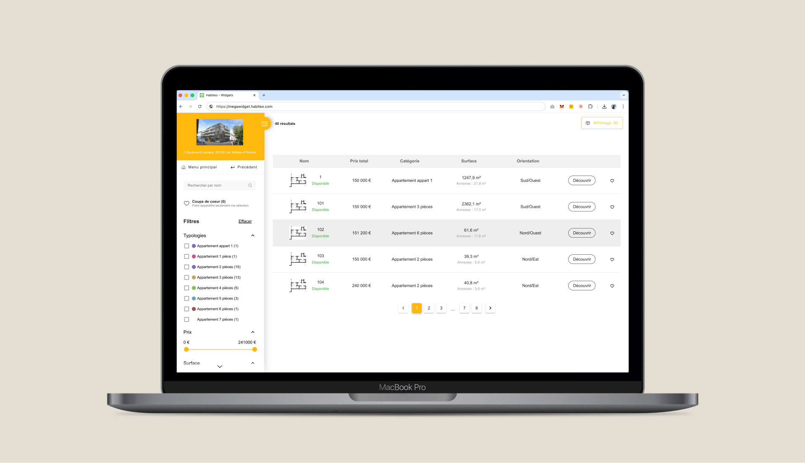
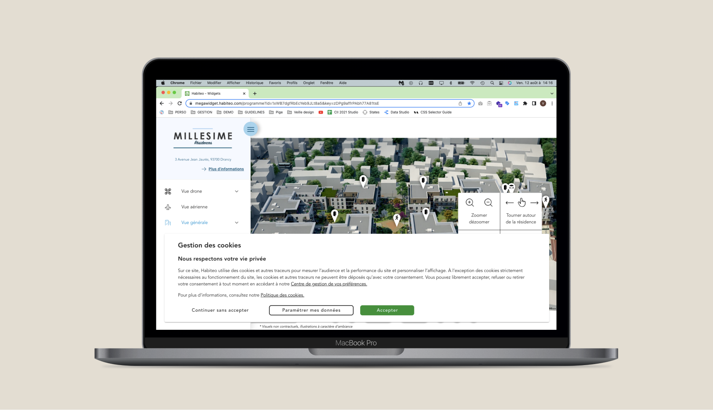
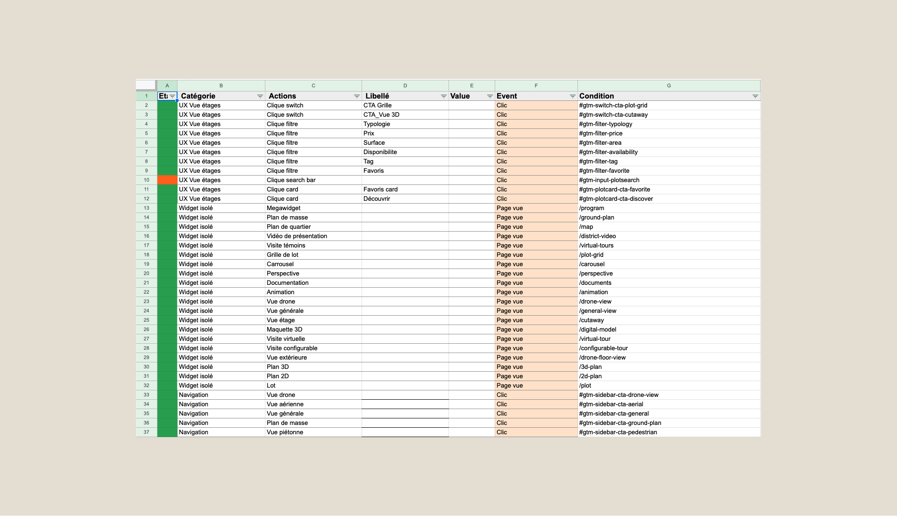

Habiteo Widgets
Designer un produit user-centric dans un écosystème piloté par le business.

Une expérience de visite à orchestrer entre des contenus 3D riches et des canaux multiples.
En 2022, Habiteo était bien établi sur le marché de la production 3D pour l'immobilier neuf — Kaufmann & Broad comptait parmi ses clients. La 3D y est un incontournable : elle permet à l'acheteur de se projeter dans un quartier, un bâtiment ou un logement qui n'existe pas encore.
Au sein de l'entreprise, plusieurs équipes coexistaient. La mienne était en charge des widgets — ces composants web qui donnent vie aux contenus 3D produits pour chaque programme immobilier : carte de quartier interactive, vue étage du bâtiment, rendus 3D des logements, visites virtuelles. Des contenus riches, gérés par le pôle de production.
Le rôle des widgets allait au-delà de l'affichage. Il s'agissait de construire une expérience de visite cohérente entre ces contenus — suffisamment engageante pour transformer un visiteur en lead qualifié, et suffisamment flexible pour que les promoteurs puissent les déployer sur leurs propres canaux : sites web en iframe, réseaux sociaux, rendez-vous clients.
C'est dans cet écosystème que j'ai exercé pendant deux ans une double casquette Product Owner et UX Designer — un choix assumé, pas subi. Piloter à la fois la vision UX et le delivery produit m'a permis de garder une cohérence bout-en-bout entre ce qui était conçu et ce qui était livré, sans perte de sens entre les deux. Un scope large, mais une position unique pour défendre l'expérience utilisateur jusqu'en production.

Comment concevoir un produit user-centric quand les décisions sont fortement pilotées par le business ?
Détecter les problèmes avant de concevoir.
Environ 50 % de mon activité était consacrée à la discovery — identifier les frictions, les opportunités d'amélioration, les besoins non adressés — pour alimenter une roadmap dont j'étais garant. Le Head of Product Emmanuel Dupuy assurait l'interface avec la direction et traduisait les orientations stratégiques en vision produit, tout en me laissant une grande liberté sur les choix de priorisation.
Trois sources principales structuraient cette phase.
#1 — L'audit UX
En auditant régulièrement nos widgets, je générais des épics d'évolution balisées comme sujets UX dans le backlog — des chantiers visant à améliorer l'expérience globale ou à préparer le terrain pour des sujets plus business. Quelques exemples concrets issus de ces audits :
— Refonte du système de filtres dans la recherche de logements
— Restructuration de la hiérarchie de l'information sur l'ensemble des widgets pour gagner en accessibilité
— Refonte de la navigation, jugée trop lourde, pour réduire la charge cognitive et mieux guider l'utilisateur
#2 — Les entretiens clients et tests internes
Habiteo était une startup pilotée par le business — la recherche utilisateur n'y était pas une priorité native. Trop coûteuse en temps et en ressources pour être menée dans les règles de l'art, elle aurait pu disparaître du radar. Grâce au sponsoring d'Emmanuel, convaincu de sa valeur dans la phase d'exploration, nous avons mis en place deux formats adaptés au contexte :
Interviews clients. Des entretiens avec des promoteurs sur leurs besoins d'intégration. Une cible sensible, à approcher avec précaution. Ces échanges ont notamment fait remonter la demande de personnalisation graphique des widgets — pour coller au branding des sites promoteurs et rendre les intégrations iframe plus naturelles.
Tests et entretiens internes. À plusieurs reprises, j'ai organisé des sessions guidées avec des collègues pour observer des problèmes de navigation, de compréhension de l'information, ou recueillir du feedback sur des choix visuels. Peu coûteux en outils, nécessitant seulement du temps, ces sessions ont produit des insights qualitatifs précieux — et révélé des frustrations ou idées que les équipes n'auraient pas spontanément remontées autrement.
#3 — Le comité Sales/UX
Mensuel, ce comité réunissait les équipes commerciales et moi pour faire remonter de nouveaux sujets terrain et challenger ma priorisation avec leur réalité business. Mon manager l'animait avant de m'en passer le relai — une transmission qui m'a mis en position de faire le lien direct entre la vision produit et les retours du front commercial. Constamment en contact avec les clients, les sales ont été une source d'alimentation essentielle du backlog.
Concevoir sous contraintes.
Les cinquante autres pourcents de mon activité étaient dédiés à la conception. Les widgets Habiteo présentaient des contraintes structurelles qui ont directement façonné les partis pris UX.
La contrainte iframe
La principale utilisation des widgets était l'intégration en iframe sur les pages programme des sites promoteurs. Ce contexte introduit une complexité spécifique : les promoteurs choisissent eux-mêmes la taille de l'iframe et sa gestion responsive. En plus des versions desktop, tablette et mobile classiques, je concevais donc une version iframe dédiée, avec une hiérarchie de l'information retravaillée, une navigation adaptée, et des fonctionnalités ordonnées par priorité d'usage.

La data comme outil de design
Pour ancrer les décisions de conception dans les usages réels plutôt que dans des intuitions, j'ai pris l'initiative de mettre en place un plan de tracking complet — en me formant seul à Google Tag Manager via YouTube, puis en le déployant avec l'aide de Christophe Barreto (lead dev) pour la partie technique.
Deux exemples illustrent concrètement l'apport de cette démarche :
Le tracking des filtres. Comprendre quels filtres étaient réellement utilisés par les acheteurs m'a permis de prendre des décisions d'interface informées : si un filtre fréquemment utilisé se trouvait en quatrième position dans la hiérarchie, le remonter était une décision justifiée par la data — pas par une intuition.
Le tracking du parcours de conversion. À mon arrivée, la conversion n'était pas mesurée dans l'application. On savait globalement si un utilisateur s'était engagé (visite de contenus 3D, clic sur un contact promoteur), mais sans pouvoir localiser les points de sortie. En instrumentant l'ensemble du parcours avec GTM, j'ai pu identifier les étapes à friction, émettre des hypothèses actionnables, et commencer à objectiver la valeur business des widgets en associant une valeur en euros aux clics de conversion remontés dans Google Analytics.

Deux ans à faire coexister vision UX et pilotage business.
Product Owner et UX Designer — un scope large pour défendre l'expérience utilisateur jusqu'en production.
Issus du comité Sales/UX, intégrés à la roadmap pour répondre rapidement aux besoins business.
Refonte navigation, migration framework front, refonte filtres, personnalisation graphique pour les promoteurs.
La mise en place du tracking GTM — initiative personnelle, déployée de zéro — a posé les bases d'un pilotage par la data qui n'existait pas à mon arrivée.
Quatre choses changeraient avec deux ans de recul.
Pousser davantage pour la recherche utilisateur. Je n'avais pas encore les arguments ni la posture pour en défendre l'importance face aux contraintes business. Aujourd'hui, je saurais cadrer cette demande différemment — en montrant son ROI plutôt qu'en la présentant comme un idéal méthodologique.
Investir dans l'acculturation au design en interne. Conduire un changement de culture produit ne se fait pas uniquement par les livrables. J'aurais consacré plus d'énergie à rendre visible la valeur du design — partages d'insights, démos internes, partage des métriques UX avec les équipes.
Inclure davantage les stakeholders dans le processus de conception. Des workshops de co-conception avec les sales, les développeurs ou les clients auraient produit une adhésion plus naturelle aux décisions — et probablement de meilleurs résultats.
Tenir davantage la main sur la UI. J'aurais défendu mes partis pris visuels avec plus d'assurance — en ancrant chaque choix dans des règles d'ergonomie et de design que je maîtrisais, mais que je n'osais pas toujours mettre en avant.
- Conception produit
- UX Design
- Discovery & audits UX
- Recherche utilisateur
- Wireframing & prototypage Figma
- Roadmap produit (Jira)
- Tracking & analytics (GA, GTM)
- Agile · Sprints
- Animation de comité transverse
- Coordination Sales / Design / Dev